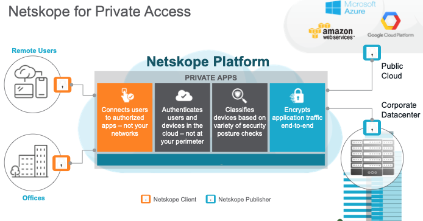
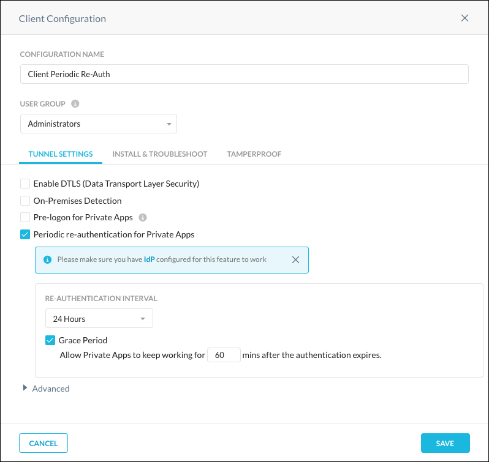
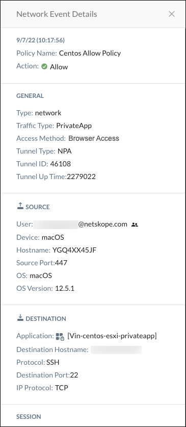

Netskope Private Access User Guide
Netskope Private Access provides zero trust network access to private applications and data in hybrid IT (public cloud and data center) environments. It is an integral capability of the Netskope Security Cloud and offers seamless connectivity for authenticated users, supports any application and protocol, reduces business risk, and simplifies IT infrastructure.
Netskope Private Access (NPA) is part of the Netskope security cloud and enables zero-trust secure access to private enterprise applications in Hybrid IT. NPA is a modern remote access service that:
Fans out to enable access to applications in multiple networks, both in the public cloud (AWS/Azure/GCP) and in the datacenter.
Provides zero trust application level access instead of network access with lateral movement.
Is delivered as a cloud service with a worldwide footprint that scales easily.
NPA delivers these benefits through a capability called Service Publishing. Service Publishing makes enterprise applications available at and through the Netskope cloud platform instead of at the enterprise's network edge.
The Netskope cloud platform becomes the location on the internet through which enterprise applications are accessed, in a sense, externalizing the access components of the DMZ. Externalizing remote access in this way has several advantages over traditional VPN and Proxy-based remote access approaches. And Service Publishing’s overall architecture and delivery-as-a-service model is consistent with the IT trends of infrastructure as a service, Hybrid IT, and the decentralized delivery of enterprise applications from datacenter, public cloud, and SaaS. NPA is illustrated in this diagram:
|  |
Netskope Private Access extends Netskope’s platform for secure access to SaaS and Web to include secure access to Private Applications that live behind an enterprise’s firewalls in the datacenter and the public cloud.
To watch a video about configuring Netskope Private Access, click play:
Prerequisites
In order to configure private apps with a publisher, you need to:
Purchase the Netskope Private Access license and contact Support to have it enabled in your tenant..
Choose a private app to be published.
Collect information about the app: host, port(s).
Identify the network on which the app is running.
Be using release 70 or later of the Netskope Client.
Requirements and Recommendations
Before deploying a Publisher, factor these requirements and recommendations:
General VM Requirements
2 CPUs
4GB RAM
8GB HDD space
Network Time Protocol
For Network Time Protocol (NTP), either:
Ensure your local NTP servers are synchronized properly (this is generally required in case of DHCP networking configuration).
Ensure that access to Internet NTP servers works properly.
Supported Browers
NPA has been tested on these browsers:
Google Chrome Version 92.0.4515.159 (Official Build) (x86_64) on Big Sur
Google Chrome Version 92.0.4515.159 (Official Build) (x86_64) on Mojave
Safari Version 14.1.2 (14611.3.10.1.5) on Mojave
Brave Version 1.26.67 Chromium: 91.0.4472.114 (Official Build) (x86_64)
Chrome Version 92.0.4515.159 (Official Build) (x86_64) on Catalina
Firefox 91.0.1 (64-bit) (on Mac Catalina)
Edge Version 80.0.361.69 (Official build) (64-bit)
Microsoft Edge Version 92.0.902.78 (Official build) (64-bit) Windows 10
Publisher Capacity
When considering publisher capacity and scaling the following are key points to consider:
Each publisher can handle around 160 Mbps of throughput.
A Publisher is agnostic to the number of users that traverse it.
A Publisher is limited to using a single IP address for both inbound and outbound connections. A single publisher should not be tasked with handling more than 32,000 concurrent TCP or UDP connections.
Scaling Publishers for Large Apps or Wildcard Networks/Domains
While publishers are agnostic to the number of users, the number of users that are supported by a single publisher is dependent on the type of applications used. Use the information below to help determine maximum number of users per publisher based on the applications used:
For web applications, browsers can open up to six concurrent connections per domain. For the purpose of sizing, the recommendation is to divide 32,000 by 6 to derive how many maximum concurrent users may be using a single publisher if it's providing access to an HTTP-based application.
For FTP workloads, it’s 2 TCP connections per user per FTP session.
For SSH/SQL connections, it’s one TCP connection per user.
To scale access to broad networks and/or large applications that need to accommodate access that exceeds the capability of available publishers in a particular location, the following publisher cluster approach can be used. A round robin mechanism to load balancing clients across publishers is used.
An environment may only have a single publisher installed, with the goal of adding additional publishers in a cluster to scale. In order for Netskope to distribute the load evenly across the new publishers in the cluster, it is recommended to reboot the original publisher. This will force the users to be spread across the cluster of publishers for a more even distribution.
 |
Important
Netskope does not recommend spreading publishers serving the same application across different physical locations or geographic regions as this could result in higher latency for some users.
Networking Services
Network:
Publishers should have network connectivity to your internal apps.
Publishers should have network connectivity (outbound) to the Internet to reach various Netskope services: configuration, gateways, upgrade, and other service endpoints.
DNS:
Publishers should be able to resolve internal service names, for example:
myapp.example.com.Publishers should be able to resolve external service names (on the Internet), including the various Netskope services: configuration, gateways, upgrade, and other service endpoints.
SSH:
You should be able to SSH into the Publisher from an internal desktop computer for basic administration tasks, such as passing the registration token to the Publisher during initial setup and troubleshooting any issues which might arise. A publisher cannot be used to connect to itself.
If you deploy the Publisher VM into a network with DHCP services, it should pick up a valid networking configuration automatically, including an IP address, default gateway, and DNS.
If you deploy the publisher VM into a network without DHCP services, you must configure a static IP address, default gateway, and DNS.
Netskope recommends that your network includes DHCP.
Note
Publishers may be subject to SSL interception. Make sure that access to *.npa.goskope.com is allowlisted from SSL interception.
Network Settings
In the NPA Publisher Wizard (available via your virtualization console or after SSHing to a running Publisher), you can now select Network Settings for configuration details.
There are two configuration options available:
DHCP: This allows you to specify a network adapter for DHCP configuration. eth0 is used in the example, but other adapters may be present depending on your NPA Publisher hardware configuration. For example, ens32 or similar will be present on NPA Publishers deployed to VMWare.
Static IP: This option allows you to specify static IP address configurations in environments where DHCP configuration is not possible. The following values must be provided as part of this configuration:
Network Adapter
IP Address and Mask: For example, 192.168.1.189/24
Gateway: For example, 192.168.1.1
DNS Servers: We recommend using two DNS server IP addresses, though only 1 is required.
Default Search Domain: This configuration is typically set to match the domain name of your company.
iOS Profile Use with Netskope Secure Web Gateway and Netskope Private Access
For Netskope Secure Web Gateway (and CASB), the iOS profile created uses an on-demand VPN on iOS devices. For Netskope Private Access installing the Client creates another always on VPN profile. You can only use one of these profiles at a time on an iOS device.
Both of the profiles are independent and can be created on the same device. Depending on the resource the you want to access, you'll need to go to iOS settings and switch between the iOS profiles.
Workflow
You can grant access to multiple private apps by repeating the following steps:
Create a publisher.
Deploy the publisher on your network.
Create a private app.
Steer traffic for the private app.
Add users.
Create policies so users can access a private app.
Deploy the Netskope Client on devices.
View Network and Page events in SkopeIT.
Note
The same publisher can be used to give access to multiple apps which resides on the same network.
If you need private apps in different networks (which are not routable from one to another), you will need to repeat these steps for each:
Create a publisher.
Deploy a publisher.
This topic explains how to configure Private Apps for DNS, domain controllers, and SMB/CIFS file shares.
Private Apps - DNS
The Private App configuration allows for DNS requests to be sent over the Private Access connection for any host within the domain and resolve the hosts back to an IP. This also applies for the many obscure subdomains required to query for domain joins, group policy queries, and FSMO role owner lookups.
A port definition is required when defining a Private App. For this definition, we do not care what port is defined because with Publisher DNS enabled, it will be handling the traffic. Because this requires something to be defined, we will use post 53.
The _gc._tcp.domain.com and _ldap._tcp._sites.DomainDnsZones.domain.com addresses will always resolve back to one (or more) domain controllers, and the domain specification without the wildcard is required for CIFS connectivity to the domain (again, always one of the domain controllers), when pulling group policy updates. This is the easiest configuration method without having to define all of the possible things a client machine might try to access.
Host
*.domain.com domain.com
Protocol & Port
UDP 53
Publisher
Whatever is relevant for domain machines.
Publisher DNS
enabled
Private Apps - Domain Controllers
The Private App configuration takes the previously resolved IP from the DNS lookup, and steers based on that. You provide all of the possible Domain Controllers’ IP’s here. You can also specify the shortform netbios name here as well if you wish, such as DC01, but you don’t use the FQDN.
Host
x.x.x.x (List of Domain Controller IPs) DC01 (netbios name)
Protocol & Port
TCP
88,135,137,139,389,464,636,1512,3268,3269,5357,49152-65535
UDP
88,123,135,137,138,389,464,1512,5357
Publisher
Whatever is relevant for domain machines.
Publisher DNS
disabled
Port breakdown is as follows:
TCP
88 - Kerberos query
135 - Remote Procedure call
137 - NetBIOS name
139 - Netbios session
389 - LDAP (plain text)
464 - Kerberos password change
636 - LDAP (secure) - might not be required.
1512 - WINS - might not be required.
3268 - LDAP to Global Catalog
3269 - LDAP to Global Catalog (secure) - might not be required.
5357 - Network Discovery - might not be required.
49152-65535 - Upper range ephermal ports. Required... Sadly. Domain integration only requires TCP.
UDP
88 - Kerberos query
123 - NTP - used to set client time from domain controllers
135 - Remote Procedure call
137 - NetBIOS name
138 - NetBIOS datagram
389 - LDAP (plain text)
464 - Kerberos password change
1512 - WINS - might not be required.
5357 - Network Discovery - might not be required.
Note that SMB isn’t covered in this. Because file servers are typically addressable by all users, we normally split this out into a seperate application, and you’ll then be able to add any non-domain controller machines into it as well.
Private Apps - SMB/CIFS
You may also want a separate method for the Remote Desktop Access to the machines. This depends on how your business operates, but typically you’ll have a single app with an individual server IPs specified within it for port 3389, and if you have users that access a service on a different server (Citrix for instance), you define that separately.
So you might have an app entitled Remote Desktop - Admins, and an app entitled Remote Desktop - Users. From a policy standpoint, you’d assign the admins both of these apps by group, and the users (just relevant one). The other defined methods above would be applied to All users.
Host
x.x.x.x (List of File Server IPs) fileserver01 (netbios name)
Also any other file servers specified by IP and netbios name.
10.104.120.221 fileserver01
Protocol & Port
TCP
445
UDP
445
Publisher Whatever is relevant for domain machines.
Publisher DNS
disabled
Create a publisher to deploy on your network and use with a private app. The token generated in this procedure is used to deploy the publisher, so be sure to make a copy.
Go to Settings > Security Cloud Platform > Publishers.
Click New Publisher.
Enter a publisher name (like
AWS US-WestWing publisher).
Click Save and Continue.
Click Generate Token.

Click Copy to get the registration token.
Click Done.
After deploying the publisher, return to the Publisher page to verify the status is Connected.
 |
The Publishers page shows each Publisher's name, status, version, CN, and number of connected apps. To customize the columns shown on the page, click the gear icon  in the table header and check the columns you want to see. To edit the name or delete a Publisher, click the menu icon
in the table header and check the columns you want to see. To edit the name or delete a Publisher, click the menu icon  in the row a Publisher is listed.
in the row a Publisher is listed.
The Netskope Private Access Publisher can be deployed on AWS, Azure, VMWare ESX, and any CentOS-based virtual machine (VM). The following sections provide instructions for each of these deployments.
The publisher needs to be deployed on the network where the private app will be accessed.
Perform these steps in the AWS console.
Launch an EC2 Instance
Sign in to your Amazon Web Services (AWS) console.
Click Services > Find services. Search for and then select EC2.
Click Instances in the left sidebar menu.
Click Launch Instance.
Choose an Amazon Machine Image (AMI)
Click AWS Marketplace in the left sidebar menu.
Enter
Netskopein the search bar.Netskope Private Access Publishershould appear in the search results. Click Select.
Choose an Instance Type
Select t3.medium as the instance type.
Click Next: Configure Instance Details.
Configure Instance Details
The token you copied from the Netskope UI is needed to complete these steps.
Enter
1in the Number of instances field.Select the VPC where the application you want to publish via Netskope is deployed in the Network field.
Keep the default values for the remaining fields.
Click Advanced Details to expand this section.
In the User data section, select the As text option.
Enter the Netskope Publisher registration token into the User Data text field.
Add a Name Tag
Adding a name tag is optional, but doing so will make it easier to identify your Netskope Publisher EC2 instance.
Click the Add Tags tab, near the top of the page.
Click Add Tag.
Enter
Namein the Key field.Enter
AWS US-WestWing publisherin the Value field.Click Review and Launch.
Review Instance Launch
Review the information in the AMI Details Instance Type sections.
Click Launch.
Select or create a key pair.
Click Launch Instances.
Review the information on the Launch Status page.
Click View Instances.
View Instances
You should now see a new EC2 instance with the name
AWS US-WestWing publisher(if you completed the Add a Name Tag steps).AWS typically takes several minutes to launch EC2 instance and run status checks. Wait until your Instance State is Running and Status Checks have passed.
Register the Publisher
The token you copied when creating a new publisher is needed to complete these steps:
SSH into the Publisher (default username:
centos, default password:centos).When prompted for a menu choice, select Register.
When requested, enter the Netskope registration token, and then click Enter.
After you have deployed the Publisher, the default login is set to centos with a default password of centos. Change this password as soon as possible to ensure a secure configuration.
Factor Firewall Rules
If you have a firewall (as an example AWS "Security groups") between the publisher and the application, it needs to be configured to allow the publisher to access the application.
For AWS: Modify the applications security group to allow inbound connections from the publisher on applications ports.
Notes on Security groups:
A publisher doesn't need any inbound connections. A a result, you can configure security groups to deny all inbound traffic.
A publisher needs access to DNS and to private access cloud (on port 443).
Perform these steps in the Azure console.
Create a Virtual Machine (VM)
Login to Microsoft Azure portal ( https://portal.azure.com/ )
Click Virtual machines.
Click + Add.
Click See all images and then search for
CentOS-based Rogue.Choose CentOS-based 7.7 by Rogue Wave Software (publisher).
Select Standard D2s v3 (2 vcpus, 8 GB memory) as the size.
Note
B1ms is good for most small deployments.
Click Create.
Enter a machine name (Example:
NetskopePublisherfor Name).Enter
centosfor Username.Copy and paste your public SSH key under SSH public key. If you do not have a public SSH key, click Generate new key pair.
Choose an existing or create a new Resource group under Resource Group. For testing, we recommend you create a new Resource group. The resource group is like a folder where it puts all VM associated resources.
Click OK.
Click Select.
Choose SSH for Select public inbound ports.
Click OK.
Click Create.
Wait until Deployment will be finished.
Open an SSH Session
Click Virtual machines.
Select the newly created VM.
Find a public IP address.
On your computer terminal execute:
ssh -i <your_private_ssh.key> centos@<ipaddress>.
Install Netskope Publisher
Run this command in your SSH session:
curl https://s3-us-west-2.amazonaws.com/publisher.netskope.com/latest/generic/bootstrap.sh | sudo bash; sudo su - $USER; exit
This will take about 10 minutes. At the end of this process, you have a fully functional Netskope Publisher and can register it.
Register the Publisher
The token you copied when creating a new publisher is needed to complete these steps:
SSH into the Publisher (default username:
centos, default password:centos).When prompted for a menu choice, select Register.
When requested, enter the Netskope registration token, and then click Enter.
After you have deployed the Publisher, the default login is set to centos with a default password of centos. Change this password as soon as possible to ensure a secure configuration.
The Netskope Publisher allows for zero trust network access to applications and hosts in your public cloud or private data center. This includes the ability to leverage a Publisher in Google Cloud Platform.
This topic explains how to upload an OVA into Google Cloud Platform Storage and import it into a compute instance. Knowledge of the Netskope UI and Google Cloud Platform are required, along with:
A Netskope Tenant
A copy of your tenant REST API token
Netskope Publisher OVA file from your tenant
A Google Cloud Platform account with a working VPC setup and API permissions.
To configure a Publisher in GCP:
Log in to Google Cloud Platform at https://console.cloud.google.com/.
Click the menu icon in the top left and select Compute Engine and then VM instances.

Click Create Instance.

Enter a name for the instance, like
netskope-publisher.
Select a Region and Zone. For testing purposes this can be anything. In a production environment, you want to enter the region and zone where the applications reside.

Configure the instance memory and CPU settings (2 core, 4 GB memory is the recommended setting, but for testing purposes a smaller machine will work).

Click Change under Boot disk.

Select CentOS as the Operating System and CentOS 7 as the Version. Leave the Boot disk type and Size as the defaults.

Click Select.

Note: Steps 10-13 are optional if no other route to the internet is available.
Click Management, security, disks, networking, sole tenancy

Click Networking.

Click the pencil icon to edit the network interface.

Select your Network, Subnetwork, and specify an Ephemeral external IP.

Click Create to start the instance creation.

Once the instance is available, connect to it by clicking SSH under the Compute Engine page.

Run the following command in the SSH session to download and install the necessary components for the Publisher. This may take about 10 minutes.
curl https://s3-us-west-2.amazonaws.com/publisher.netskope.com/latest/generic/bootstrap.sh | sudo bash; sudo su - $USER; exit
At the end of this process, you have a fully functional Netskope publisher and can register it with Netskope.
When prompted for a menu choice, select Register.

When requested, enter the Netskope registration token and click Enter.
These instructions assume that the CentOS user is configured and available on a default CentOS installation. Use an account other than root, and not named centos. Otherwise, this configuration will not work
The token you copied when creating a new publisher is needed to complete these steps:
Start with a CentOS 7-based Linux VM.
SSH into the CentOS-based system.
Run the command:
curl https://s3-us-west-2.amazonaws.com/publisher.netskope.com/latest/generic/bootstrap.sh | sudo bash; sudo su - $USER; exit
Wait about 10 minutes.
At the end of this process, you have a fully functional Netskope publisher and can register it with Netskope.
When prompted for a menu choice, select Register.
When requested, enter the Netskope registration token and click Enter.
Download the VHDX file, and then perform these steps in the Hyper-V console.
If you want to validate the integrity of the VHDX, you can download the SHA hash from here.
Launch the Microsoft Hyper-V Manager and select the Action New > Virtual Machine....

Enter a VM Name (like NPA Publisher), optionally an installation location, and then click Next.
Tip
Name the Publisher to describe its location and/or application use.

Leave Generation 1 selected and click Next.

Specify the amount of memory for the NPA Publisher (2048 is recommended for most use cases) and click Next.

Select a network adapter to attach the NPA Publisher that has Internet access and click Next.

Select Use an existing virtual hard disk and then Browse to the downloaded VHDX file. When finished, click Next.

Confirm the Hyper-V Wizard configuration options and click Finish.

Now you can Start your NPA Publisher in Hyper-V.

Get the IP address provided by the Hyper-V Manager to SSH into a Publisher for Network Settings.

Register the Publisher
The token you copied when creating a new publisher is needed to complete these steps:
SSH into the Publisher (default username:
centos, default password:centos).When prompted for a menu choice, select Register.
When requested, enter the Netskope registration token, and then click Enter.
After you have deployed the Publisher, the default login is set to centos with a default password of centos. Change this password as soon as possible to ensure a secure configuration.
The token you copied when creating a new publisher is needed to complete these steps:
Download the OVA from the Publisher page in the Netskope UI. Go to Settings > Security Cloud Platform > Publishers and click Publisher OVA .

If you want to validate the integrity of the OVA, you can download the SHA hash from here.
Install this OVA into your ESXi machine.
SSH into the publisher (default username:
centos, default password:centos)When prompted for a menu choice, select Register.
When requested, enter the Netskope registration token and click Enter.
After you have deployed the Publisher, the default login is set to centos with a default password of centos. This password should be changed as soon as possible to ensure a secure configuration.
This topic explains how to enable SNMP on a Publisher and edit the firewall to allow external monitoring.
Connect to a Publisher using SSH and login.
On the menu, select
5and exit to the CLI.Install SNMP and snmp-utils.
sudo yum install net-snmp net-snmp-utils
Configure the SNMP daemon to start after a device restart.
sudo systemctl enable snmpd
Check the snmpd service to make sure it is running.
systemctl status snmpd.service
Install your favorite file editing utility, in this nano.
sudo yum install nano
Edit the snmpd.conf file to change community strings and increase security.
sudo nano /etc/snmp/snmpd.conf
Restart the snmpd service.
sudo systemctl restart snmpd.service
Check the snmpd service to make sure it is running.
systemctl status snmpd.service
Verify the firewall service.
sudo firewall-cmd --state running
Determine what the default zone is.
firewall-cmd --get-default-zone public
Determine what zones are active. Please note that if the publisher has not connected to an application yet the docker interface will not be present.
firewall-cmd --get-active-zones docker interfaces: docker0 public interfaces: ens32 virbr0
Add the SNMP service to the public firewall zone.
sudo firewall-cmd --zone=public --add-service=snmp success
Confirm that the SNMP service has been added to the public firewall zone.
sudo firewall-cmd --list-all public (active) target: default icmp-block-inversion: no interfaces: ens32 virbr0 sources: services: dhcpv6-client snmp ssh ports: protocols: masquerade: no forward-ports: source-ports: icmp-blocks: rich rules: rule family="ipv4" destination address="191.1.1.1/32" port port="784" protocol="tcp" accept rule family="ipv4" destination address="191.1.1.1/32" port port="785" protocol="udp" accept
sudo firewall-cmd --zone=public --list-all public (active) target: default icmp-block-inversion: no interfaces: ens32 virbr0 sources: services: dhcpv6-client snmp ssh ports: protocols: masquerade: no forward-ports: source-ports: icmp-blocks: rich rules: rule family="ipv4" destination address="191.1.1.1/32" port port="784" protocol="tcp" accept rule family="ipv4" destination address="191.1.1.1/32" port port="785" protocol="udp" accept
Test access to SNMP. If it works, then add permanent.
Add the SNMP service to the firewall permanently.
sudo firewall-cmd --zone=public --permanent --add-service=snmp success
Verify that the SNMP service has been added to the firewall permanently.
sudo firewall-cmd --zone=public --permanent --list-services dhcpv6-client snmp ssh
Specify a private app for the Publisher to steer.
Go to Settings > Security Cloud Platform > App Definition and click Private Apps.

Click New Private App.

Enter a meaningful app name in the Application Name field (like
jira).Enter the Host domain in the Host field (like
jira.site.io). The Host field supports the following syntax: Host (jira.site.io). Up to 32 hosts can be added.Important
Using a hostname is recommended. If an app needs to be accessible by hostname and IP address, enter each separately using the Add button.
Enter the app TCP or UDP port, port range, or ports and port ranges. For example:
Enter a specific port:
80Enter a specific port range:
1024-2048Enter ports and port range(s):
22,80,443,1024-2048
Click in the Publisher text field and select one or more Publishers from the dropdown list.
Tip
For high-availability, add multiple publishers for each private app. Up to 16 Publishers can be used per app.
To have the Netskope Client send DNS requests for the specified hosts to the configured Publishers, enable the Use Publisher DNS toggle.
Click Save.
Connecting the private app to the publisher may take several minutes. Make sure that you see the green icon  for this private app before proceeding. If the badge is red, use the Troubleshooter feature or check your firewall rules before proceeding.
for this private app before proceeding. If the badge is red, use the Troubleshooter feature or check your firewall rules before proceeding.
Troubleshoot a Private App
To troubleshoot a private app:
Click Troubleshoot on the Private Apps page.

Select an option for these settings:
Private App: Select an app from the dropdown list.
User and Device: Search for and select a user and device, or select one or more from the list.

Click Troubleshoot. If the configuration is not correct, the troubleshooter will show what is not configured properly.

When the configuration is correct, the Troubleshooter will show all is working.

Browser Access is an additional method through which users can access enterprise internal web applications over HTTP/HTTPS. Users can also access non HTTP/HTTPS internal applications using the Netskope Client.
Prerequisites
You must have an active Identity Provider (IdP) account and have privileges to modify settings in your IdP account that will direct traffic to Netskope.
Browser Access requires that the hostname in the originating HTTP request matches the hostname expected by the Application server. Browser Access only supports HTTP/1.1, HTTP/2, and TLS 1.2. TLS 1.3 and HTTP/3 are not supported.
Workflow
Create a SAML Reverse Proxy account in the Netskope UI, and then update your IdP account with the Netskope ACS URL and Audience URL.
Create a Real-time Protection policy to grant users browser access to Private Apps.
Create a SAML Account for Browser Access
You will need your IdP SSO URL and certificate to complete these steps.
Log in to the Netskope UI.
Go to Settings > Security Cloud Platformand click SAML (under Reverse Proxy).
Click Add Account.

In the New Account window, enter a name for the account.

Select Private Apps from the Application dropdown list.
Select and enter these parameters:
IdP SSO URL: Enter your IdP SSO URL.
IdP Certificate: Enter your IdP certificate.
Click Save and View Netskope Settings to see the URLs for this account. Copy the Browser Access ACS URL and Audience URL to use in your IdP account. Update your IdP account with these URLs before proceeding.

Enable Browser Access for a Private App
These instructions are for new and existing Private Apps.
Go to Settings > Security Cloud Platform > App Definition and click Private Apps.
Click New Private App to create a new private app, or select an existing app (and jump to step 4).

Enter a meaningful app name in the Application Name field.
Enable Allow Browser Access.
Enter the Host domain in the Host field (like
jira.site.io). The Host field supports the following syntax: Host (jira.site.io). Up to 32 hosts can be added. Next add a TCP port number.After adding the hostname and port, the Public Host URL is displayed. This is the URL by which properly authenticated users can access the private app. You can copy the public host name by clicking the copy icon
 .
.Select HTTP or HTTPS. For HTTPS, the private app must either use a certificate that is signed by a trusted certificate authority, or you must select the Trusted self-signed certificate option.
A Private App can be accessed via a browser in two ways:
Using the generated hostname from the Public Host field.
Creating a custom hostname and uploading a certificate and key pair for the private host. Click the Custom Hostname toggle, and then click Upload the Certificate to open a page to enter your certificate and key.
Note
You can use the public host name for your custom host name in your DNS system. Create a DNS record, select the CNAME type, and then add your public host name. You will need to upload the certificate and key for the custom host name. Click the Custom Hostname toggle, and then click Upload the Certificate to open a page to enter your certificate and key.
Click in the Publisher text field and select one or more Publishers from the dropdown list.
Tip
For high-availability, add multiple publishers for each private app. Up to 16 Publishers can be used per app.
Click Save.
Connecting the private app to the publisher may take several minutes. Make sure that you see the green icon for this private app before proceeding. If the badge is red, use the Troubleshooter feature or check your firewall rules before proceeding.
Create a Real-time Protection Policy for Browser Access to Private Apps
You need to create a Real-time Protection policy in order to allow Browser Access to Private Apps.
Go to Policies > Real-time Protection.
Click New policy and select Private App Access.
For Source, select the Users, OU, or Groups for which you want to grant access to the private app(s).
For Access Method, select Browser Access. At least one Access Method must be defined, either Browser Access or Client.
If Browser Access is used, Client users will not be able to access Browser Access Private Apps. If Client is used, Client users and Browser Access users will have access to Private Apps.
If Access Method is not showing, click Add Criteria to search for and select Access Method, and then select Browser Access.
For Destination, leave Private App and select your private app from the dropdown list.
For Action, select Allow to grant access. To deny access, select Block.
Give the policy a name (like
Browser Access for JIRA), and then click Email Notification to choose the notification template for the policy. When finished, click Save.
Click Apply Changes.
To steer traffic for private apps, you can add users or create a steering configuration that specifies an Organizational Unit (OU) or User Group.
OUs or User Groups are specified in the Real-time Protection policy that grants access to private apps. To add users individually, refer to Add Users.
If you do not already have a steering configuration that specifies the Organization Unit (OU) or User Group you want to steer to a private apps, follow these steps.
If you already have such a steering configuration, you can simply enable private apps for that steering configuration. For more details, refer to Change Steering Configurations to Include Private Apps.
Go to Settings > Security Cloud Platform > Steering Configuration and click Create a New Configuration.

In the New Configuration dialog box, enter and select the following settings:
Configuration Name: Enter a meaningful name for this steering configuration.
Applies To: Choose either an OU or User Group. The dropdown/search field allows you to select and search for an OU or User Group.
Traffic: Select Cloud Apps Only or All Web Traffic.
Status: Change to Enabled.
Private Apps: Change to Steer All Private Apps.

Click Save.
To update a steering configuration for private apps, follow these steps:
Go to Settings > Security Cloud Platform > Steering Configuration. Complete the following steps for each steering configuration that you want to steer to private apps. There are two methods:
If you have just one Default steering configuration, you can use the Edit button in the top right corner.

If you have multiple steering configurations, click the
icon on the right side of each configuration and select Edit Configuration.
For Private Apps, change to Steer All Private Apps.

Click Done.
This topic describes how to obtaining a dedicated IP address from Netskope for your environment.
Background
Many organizations have been utilizing IP address allowlisting on their corporate cloud apps in order to ensure additional security should a user's credentials be compromised by a malicious actor. This allowlisting is inclusive of all egress IP addresses for your data centers and remote offices. Typically for remote users, a VPN connection is required to access private applications and also their corporate cloud applications.
With Netskope, the traffic flow changes when utilizing the Netskope Client. Because the Netskope Client encrypts its connections to the Netskope proxy, cloud applications and IdP providers no longer see the corporate egress IP addresses and instead see an IP addresses for Netskope’s POPs.
The preferred solution is to add Netskope’s POP IP addresses to your IP address allowlisting for conditional access and employ multi-factor authentication (MFA) with your IdP provider. If you do not want to use MFA or open up access to your cloud applications to Netskope’s POP IP address ranges, the following is an alternative solution to preserving your dedicated IP addresses when accessing SaaS apps or web sites.
Solution
Let’s assume you are using an IdP provider like Okta, and that you have only one datacenter for all of their traffic.
By default, all Okta traffic is steered to Netskope proxy. This method changes this default behavior. Instead of sending Okta traffic through the Netskope proxy, this method defines your Okta URL as a private application inside of Netskope Private Access.
Netskope Publisher: There are a couple of options. You could deploy a Publisher inside your existing corporate data center. All Publisher traffic would be seen as your existing egress IP address (1.1.1.1).
 |
Another option is to determine where your Okta instance is located, and deploy a Publisher in AWS, GCP, or Azure within a region that is closer to Okta instance.
 |
Open up a Terminal/Command Shell and try pinging your tenant URL:
 |
You can see in the response, this Okta tenant is located in US-West-2 Region inside of AWS. Since you're East Coast based, it would be better to deploy a Publisher in the US-West-2 Region of AWS so the Netskope Security Cloud can provide the most optimized path to Okta from wherever the remote user is located without having to route back to the east coast data center just to go to the west coast data center for Okta.
In AWS
Go to the AWS console.
 |
Deploy the Publisher AMI image into the West region of AWS and make note of the Public IP Address. Best practice for a production deployment of a Publisher is to use an elastic IP address so that if the Publisher is rebooted, it will keep the IP address across reboots.
Okta:netskopepartners.okta.com Okta Location: AWS US-West-2 Region Customer Corporate Egress IP: 1.1.1.1 Customer Location: East Coast Netskope Publisher Egress IP: 54.193.39.103 (US-West-2 Region)
In Netskope
In your Netskope tenant, go to Settings > Security Cloud Platform > App Definition and click on the Private Apps tab.
 |
Define the Okta URL as a Private Application and make it accessible in Real-time Protection policy for Private Access.
This is going to force ONLY the Okta traffic to be sent via NPA publisher. The publisher ip address is an ip address that the customer is ‘renting’ from AWS and is not shared by other customers.
Upon a successful login to the cloud application all of the cloud app traffic will be sent from the Netskope Client directly to Netskope proxy.
In Okta
In Okta Administration, make sure you are IP allowlisting ONLY your corporate data center’s egress IP address (1.1.1.1) and the NPA Publisher IP address (54.193.39.10). These are the only source IP addresses that the your Okta tenant will allow a successful login from (even if a malicious actors is on Netskope’s network has compromised credentials).
In Cloud Applications
You should still allow Netskope’s POP IP addresses along with your corporate egress IPs.
A phased approach to allowlist apps with Netskope IP ranges is outlined below.
Summary
With the above configuration, if a malicious actor somehow obtains compromised credentials and am also a user of the Netskope Security Cloud, when attempting to access one of your corporate cloud applications, authentication will be redirected to Okta, but because the auth request is NOT coming from your Publisher or corporate egress IP address, a log in attempt will fail, even with valid credentials.
Phased Approach for Allowlisting Netskope IP Ranges
This phased approach has been deployed by users that have IP allowlisted around120 SaaS applications.
Phase 1: Bypass all of your 120 sanctioned apps in Netskope. Don't steer the apps until you allowlisted the Netskope IP ranges in each SaaS app. You will receive immediate visibility to ~2300 unsanctioned cloud applications, as well as all web site traffic, if you use Netskope Secure Web Gateway in place of your existing SWG.
Phase 2: Add Netskope IP ranges to your sanctioned apps. This doesn't have to be all at once - you could add our ranges in batches.
Phase 3: As you allowlist the Netskope IP ranges to your SaaS apps, add sanctioned SaaS apps back to Netskope steering config so they pass through the NewEdge network for visibility, control, DLP, threat detection, etc. Note - we purchased a /17 network so we have plenty of room for our future POPs that we'll be adding around the globe. Once you add our ranges you should not have to adjust them again due to the public IP space we have.Continue until all of your 120 SaaS apps have the Netskope IP ranges added to their Allowed List.
Add users that you want to have access to private apps. Users are specified in the Real-time Protection policy that grants access.
Go to Settings > Security Cloud Platform >Users.
Click Add Users.

Add users by manually adding a comma-separated list or uploading a CSV file. By default an email invitation is sent to all new users once they are added.
When finished, click Save.
An email will be sent to the user that provides a downloadable file to install the Client.
Tip
This can alternatively be done by importing users from AD (via AD Importer).
Private apps are not steered by default, so a user is not notified when that private app is inaccessible. Policies are required to log events and enable access to Users, Groups, or OUs. Use Real-time Protection policies to:
Grant access to a private app for users, groups, or OUs.
Block access and notify the user(s) why access is denied.
Block access but provide instructions to gain access, such as contacting IT or upgrading a device.
For a specific private app, you may want to have one policy that grants access for a defined set of users, and then use a second policy that blocks and notifies users who don't have access.
To create an Real-time Protection policy for private apps:
Go to Policies > Real-time Protection.
Click New policy and select Private App Access.
For Source, select the Users, OU, or Groups for which you want to grant access to the private app(s).
For Destination, leave Private App and select a private app from the dropdown list (like
JIRA).For Action, select Allow to grant access. To deny access, select Block.
Give the policy a name (like
Allow All Users to access JIRA), and then click Save.Click Apply Changes.
Netskope Private Access requires the Netskope Client to be installed on a Windows, Mac, Android, or Chrome OS device. The Client steers private access application traffic to private access gateways.
Important
When the Client detects an alternate steering method, like a GRE or IPSec tunnel, it disables the Client-based data tunnel (TLS tunnel) to the Netskope platform and therefore access to private apps. This configuration can be useful for disabling private app steering while on-premises.
The Netskope Client supports these operating systems:
OS | Versions | Notes |
|---|---|---|
Microsoft Windows |
| Supported under special consideration. For more information, refer to Windows 7 EOL. |
Apple macOS |
| (See this KB article for macOS High Sierra support)macOS High Sierra introduced a change in the Kernel Extensions loading (Apple Technical Note TN2459) which requires the end user of the device to approve loading any third-party kernel extensions such as Netskope. |
Google Android |
| Please read KB article about Android 7.0 support. NoteWhen using Android for Work, only the apps managed by Android for Work is steered by the Netskope Client. |
Google Chrome OS | 53.0 and above |
Note
Starting with release 75, the Netskope Client supports Windows devices running on ARM64 architecture.
After adding users, the users receive an email with links to download the Client. The user must choose either the macOS, Windows, Android, or Chrome OS Client download (iOS). You must install version 65 of later of the Netskope Client to use Netskope Private Access.
After receiving the email, the user needs to click the link for the appropriate platform for their device.
When the download is complete, the user can install the Client.
The Client should automatically start and show that it's connected.
Tip
The Client will register with the Netskope Private Access backend and will be ready to steer traffic.
Verify the Client is Steering a Private App
Open a browser (or another client application).
Try to access the private app. (Example:
http://jira.site.io:22).The user should be able to access it.
Disable the Netskope Client.
Try to access the private app. The user shouldn't be able to access it.
Enable the Netskope Client again.
After the Netskope Client is installed and enabled on devices, you can check the status of each device.
Go to Settings > Security Cloud Platform > Devices.
Click the gear icon
 on the far right of the table header row.
on the far right of the table header row.Enable the Private Access Status checkbox.

The status of each device is now shown on the page.
 |
The Netskope Client can require a user to re-authenticate for access to private apps. IdP federation must be configured to use this feature. The Client IdP prerequisites are:
All users must be authenticated via the IdP and imported into your Netskope tenant. The email address of the user must be available for all IdP authenticated users.
Configure your IdP in the Settings > Security Cloud Platform > SAML (under the Forward Proxy section ) in your Netskope Tenant UI. See SAML Forward Proxy for details.
Ensure that the URL
nsauth-<tenantname>.goskope.comis publicly accessible. If not, please reach out to Netskope support.
To configure Client re-authentication:
Go to Settings > Security Cloud Platform > Netskope Client > Devices and click Client Configuration.
 Enable the Periodic re-authentication for Private Apps checkbox.
Select a time period from the Interval dropdown list for how often you want re-authentication to occur.
To allow a user time to re-authenticate after the specified interval time has expired, enable the Grace Period checkbox and enter the amount of minutes. The grace period must be less than the interval.
The Netskope Client menu shows when re-authentication is enabled, and allows you to re-authenticate by clicking that option on the menu.
If the interval expires, the Netskope Client prompts the IdP sign-in window for re-authentication. If the grace period expires, the Netskope Client disconnects from Netskope Private Access.
SkopeIT provides insight into private app usage by tracking network events and alerts. In addition to SkopeIT, network events and alerts can be compiled into a report. When creating a report, click Add Widget and select Network or Alert from the Query dropdown list.
Network Events
Network events enable you to monitor private app traffic and view relevant details, like who has access to what, from where, and for how long. All Network Events apply to private apps. To view Network Events, go to SkopeIT™ > Events > Network Events.
 |
To view detailed information about a network event, click the  icon.
icon.
|  |
Alerts
Alerts enable you to verify if any private app policy violations occur, which happen when an attempt to access a private app is explicitly denied by a policy. For more details about using the Alerts page, go to Alerts.
Go to SkopeIT™ > Events > Alerts.
Click +Add Filter, select Traffic Type > Private Applications, and then click Apply.

After assigning private apps to specific Publishers, you can change one or more Publishers simultaneously. The Private Apps page enables you to change private apps assignments in bulk. For example:
Change one or more publishers for private apps.
Quickly migrate existing private apps to a new publisher.
Disconnect private apps before deleting a publisher.
To change publishers for private apps:
Go to Settings > Security Cloud Platform > App Definition > Private Apps.
Select one or more private app checkboxes and click Change Publishers.

The selected private apps are shown in the Bulk Change Publisher dialog box. Click in the Publisher text field and select one or more publisher in the dropdown list, and then click Save.

In addition to changing publishers for private apps, this page enables you to delete one or more private apps. Select one or more private app checkboxes, and click Delete, and then click Delete again to confirm. If the private app being deleted is specified in a policy, a message box informs you of this factor and you'll need to remove it from the policy in order to delete the private app.
This topic describes how to upgrade one or more Publishers. Using at least a pair of Publishers for each private app is recommended so they can provide high-availability access. Before upgrading all Publishers, upgrade a test Publisher first, and then proceed to the other Publishers.
To use these instructions, identify the Publishers that you want to upgrade.
Upgrading Publishers
SSH into the Publisher you want to upgrade.
On the Publisher option menu, select Upgrade, and then select 1 to initiate the upgrade. The upgrade should take around a minute.
In the Netskope UI, go to Settings > Security Cloud Platform > Publishers. Locate the Publisher you just upgraded on the Publishers page to confirm it has a Connected status.
Repeat these steps for every Publisher you are using to access private apps.
Changing Publishers during an Upgrade
If the upgraded publisher has not re-established access, re-assign the app(s) to a different Publisher.
To change Publisher assignments in the Netskope UI, go to Settings > Security Cloud Platform > App Definition > Private Apps. Select the checkboxes for the apps assigned to the Publisher and click Change Publisher.
Click in the Publishers text field, and then select a different Publisher from the list. When finished, click Save.
Locate the Publisher you just assigned on the Publishers page to confirm it has a Connected status. If not, contact Netskope Support to stop the upgrade process and ask for assistance.
What is the Netskope Private Access Gateway?
The Private Access Gateway provides both control and transport functionality. It delivers application authentication and authorization info to the Client, including the SRP (application authorization and routing info) and also serves as the first entry to the Netskope NewEdge infrastructure for Netskope Private Access. It transports all Private Application traffic following authentication.
What services and polling interval does a Publisher use to check if a private app/service is available?
The polling interval is about 1 minute.
The Publisher will try to connect to a configured port on a private app to check whether the private app is reachable.
Important factors to consider:
The Publisher works best when you define private apps is defined by hostname (e.g.,
jira.globex.io) and port (e.g.,8080).When an app is specifies with multiple ports or a port range, the Publisher will use only the first port from the list or range to check availability. For example, port range 70-90 will return unreachable, even if you are listening on port 80, because the only port that will be checked is 70 (this is a known limitation).
If an app definition specifies multiple ports and/or port ranges, it will check whether any of them is reachable. For example, if you specify 22, 70-90, if it’s able to reach port 22, it will mark the app as reachable.
The Publisher can't check reachability for private apps that are defined with a wildcard (
*.globex.io) or CIDR block (10.0.1.0/24). It also does not check reachability of apps with port ranges defined (3305-3306).
How do I return to the setup menu during a Publisher SSH session?
From the /home/centos folder, enter sudo ./npa_publisher_wizard.
Can Publisher connections be proxied/TLS terminated?
No. The Publisher does not support explicit proxy. The Publisher does SSL pinning for the registration process and server-side certificate authentication against a specific certificate.
If a transparent SSL/TLS interception device is deployed inline, the destination needs to be whitelisted/bypassed allowlisted/bypassed (*.npa.goskope.com).
How does Netskope handle the connection of an application when the end user terminates a session?
Netskope will terminate the end to end tunnel between the Publisher and the end application upon session termination in SSH and other TCP based flows.
How do I SSH into the AWS Publisher?
If deployed in AWS, you will assign the AMI a KeyPair.pem that you already have (or generate a new one) during the provisioning of the Publisher.
ssh -i <Path To Your KeyPair.pem file> centos@<External IP Address of Publisher>
centos is the default username for the Publisher. (Please notice that it's different from ec2-user ,which is the default username for Amazon AWS AMIs).
After successfully connecting via SSH to the publisher, you will be placed into an interactive CLI menu (below). You can choose option 3 to be placed into a normal UNIX CLI for additional troubleshooting. Go here for troubleshooting tips.
 |
To get back to the interactive CLI menu after exiting, use $ sudo ~/npa_publisher_wizard.
How do I SSH into the VMWare Publisher?
ssh centos@<External IP Address of Publisher>Default password: centos
You will be required to change the password after first login.
Do Publishers support Active-Active in the event there are multiple Publishers that have access to the same Private App?
Publishers work in Active-Active mode. Active-Active mode enables higher throughput. Up to 16 publishers are supported in an Active-Active deployment per app. A round-robin algorithm is used to spread Netskope Clients across publishers.
What happens if the Publisher registration token is corrupted during the initial deployment stage? Can I reset it locally at the Publisher?
If the registration failed (for example, because you missed a digit from the registration code), you can SSH into the Publisher and provide a new registration token.
If the registration succeeded, but you decided to register the Publisher with another token, this is not officially supported and not advised. You will need to reinstall the Publisher.
What are the requirements for deploying a Publisher into a VMware environment?
General VM Requirements
2 CPUs
4GB RAM
8GB HDD space
Networking Services
Network:
Publishers should have network connectivity to your internal apps.
Publishers should have network connectivity (outbound) to the Internet to reach various Netskope services: configuration, gateways, upgrade, and other service endpoints.
DNS:
Publishers should be able to resolve internal service names, for example:
myapp.example.com.Publishers should be able to resolve external service names (on the Internet), including the various Netskope services: configuration, gateways, upgrade, and other service endpoints.
SSH:
You should be able to SSH into the Publisher from an internal desktop computer for basic administration tasks, such as passing the registration token to the Publisher during initial setup and troubleshooting any issues which might arise. A publisher cannot be used to connect to itself.
Note
If you deploy the Publisher VM into a network with DHCP services, it should pick up a valid networking configuration automatically, including an IP address, default gateway, and DNS.
If you deploy the publisher VM into a network without DHCP services, you must configure a static IP address, default gateway, and DNS.
My 2nd (or subsequent) Publisher shows as Connected to an older publisher record in the Netskope UI. Now what?
This could be a known issue. If you copied your new Publisher from an older (working) Publisher, then you've likely hit this issue. For example, creating an AMI image from a known working EC2 instance, and then launching a new instance from that AMI image, is an example of one way to hit this issue.
Please contact Netskope Support or create a new Publisher rather than copying an AMI or image.
Symptom of this issue
In the screenshot below, the new publisher named "NPA Publisher 2 is actually the instance that's running in AWS. However, that Publisher is reporting its status, version and CN in the record of the original publisher named Master NSKP Endpoint Publisher.1. (Note that the real AMI for the Publisher named Master NSKP Endpoint Publisher.1 is not running at the time this screenshot is taken.)
 |
How to resolve this issue
SSH in to the new publisher.
Enter the following command:
sudo rm -rf resources ; sudo shutdown -r nowYou may need to restart the AMI from the AWS EC2 console.
After status checks are complete, refresh the Publisher status page in NSKP tenant.
Indication that you've cleared the bug is shown in the screenshot below:

How much bandwidth can a Publisher handle?
An individual Publisher can handle approximately 160 Mbps of throughput, and can handle approximately 32,000 concurrent UDP orTCP connections.
How much downtime should I expect during Publisher upgrades and/or failover to secondary Publisher?
Single Publisher: 1-3 minutes as the system is upgraded until the Publisher comes up.
HA Publishers: Less than 5 seconds as the traffic switches to the other Publishers in the app definition.
How can I install a Publisher in Nutanix AHV or other CentOS based systems manually?
Follow the instructions here for configuring Azure or GCP.
Can I re-enroll an existing publisher?
No. Re-enrolling a Publisher is not currently supported.
Can the Publisher utilize autoscaling functionality of the Cloud Service Provider if deployed in Azure, GCP, or AWS?
No. Autoscaling a Publisher is not currently supported.
Can syslog be setup on a Publisher?
Yes. The basic steps are:
SSH into the Publisher.
Select the menu option Configure syslog.
Provide the syslog server host/IP and port.
The Publisher restarts to apply the settings, and sends these entries to the configured syslog server.
For Private Application allowlisting, what IP Address is seen at the Private App level from NPA?
The Private Application Host will see the connection as originating from the IP address of the Publisher that is connecting to it. There is no range, but depending upon the number of Publishers used to connect to the Private Application Host, you will need to allowlist each of those IP addresses.
What ports are required for the NPA to work correctly?
These URLS will change in the future, but for now use the original domain configuration.
Component | URL | Port | Notes |
|---|---|---|---|
Client |
Prior to February 2020: | TCP 443 (HTTPS) | |
Publisher |
Prior to February 2020: | TCP 443 (HTTPS) UDP 53 (DNS) | DNS is not required to be allowed outbound if there is a local network DNS server internally. |
Client and Publisher |
Prior to February 2020: Contact your Netskope SE, TSM, or Support for your tenantid and mp-name. | TCP 443 (HTTPS) | This is needed one time only during the registration. Example URL: MP-Name Variables:
|
I'm not certain what TCP/UDP ports my application needs in order for it to work. What can I do?
To connect users with applications/services, an NPA administrator must configure Private App policies within the Netskope UI in a few places. Here are the configuration options and details for known application/service types.
Application | Protocol/Port | Factors |
|---|---|---|
Web Traffic | TCP: 80, 443 (custom ports: 8080, etc.) UDP: 80, 443 | Google Chrome will use the QUIC protocol (HTTP/S over UDP) for some web applications, so duplicating the web browsing ports for both TCP and UDP can provide a performance improvement. |
Secure Shell (SSH) | TCP: 22 | |
Remote Desktop (RDP) | TCP: 3389 UDP: 3389 | Some Windows RDP client apps (in particular, newer Windows 10 versions) will now prefer to use UDP:3389 to perform Remote Desktop connectivity. |
Windows SQL Server | TCP: 1433, 1434 UDP: 1434 | The default port for Windows SQL Server is 1433, though this can be customized in your environments. Refer to the Microsoft documentation for more details: Configure the Windows Firewall to Allow SQL Server Access. |
MySQL | TCP: 3300-3306, 33060 TCP: 33062 (for admin specific connections) | For general MySQL connection use cases, only port 3306 is required, but some customers may take advantage of the additional MySQL feature ports. Netskope recommends using a port range for MySQL database private apps. MySQL will block connections from the NPA Publisher because it detects the reachability test as a potential attack. Using a range in the port configuration will result in the NPA Publisher performing a reachability check only on the first port in the range and therefore prevent MySQL from seeing this traffic and avoiding the port block. Refer to the MySQL documentation for more details: MySQL Port Reference Tables. |
For further specifics, please reach out to your Netskope Technical Success Manager or Sales Engineer for assistance.
Can NPA tunnel protocols and ports outside the common ones listed above?
Yes. NPA can tunnel apps outside of that list. NPA supports both the TCP and UDP protocols and all associated ports, with one notable exception: Netskope does not currently tunnel most DNS traffic, but we do support tunneling DNS SRV lookups over port 53. This is needed for service discovery, which is used in various Windows AD scenarios involving LDAP, Kerberos, etc.
Note
Sometimes applications like VoIP can be problematic. Not so much due to tunneling, but rather configuration. For example, applications that perform dynamic port allocation when establishing a connection can be problematic, because an admin cannot know which ports will be set up by the service end of the application in advance, so there's no way to know what ports to specify.
What protocols and ports can NPA tunnel for Private Applications?
NPA can support any client to server TCP and UDP traffic.
Can NPA tunnel ICMP?
No. NPA does not tunnel ICMP, only TCP and UDP. So you cannot ping or traceroute over NPA to test network connections. To quickly checkwhether NPA steering is working for a private application defined by FQDN,from a command prompt/Terminal window, enter: nslookup<FQDN_of_Private_App>. You can utilize tcping, psping, or other tcp based tools to test connectivity.
Does NPA support tunneling connections established from a private app to a Client?
No. NPA does not support protocols that establish connections from a private app to a Client. For example, FTP Active mode is not supported.
How does the the Netskope Client check for configuration updates?
The Client auto checks for updates as set by the administrator or end user.
Does the Client send state changes for updated authentication?
Yes. The Client provides both periodic and dynamic updates, such as device classification, authentication status, and user to the controller for authorization information.
Does NPA support push operations or server to client initiated traffic?
No. NPA does not support protocols that establish connections from a private app to a client.
Does NPA support VoIP or Soft Phones?
VoIP requires usage of Session Border Controllers in order to traverse NAT. We’ve discovered that many customers do not have Session Border Controllers deployed as they are not required for enterprise VoIP deployments. However without them, VoIP support with NPA is not possible.
Does NPA publisher support Explicit Proxy environment?
No. The NPA Publisher cannot be configured to connect to the Netskope Cloud via explicit proxy.
Many Netskope components such as the Publisher, CE (Cloud Exchange) , and CLS (Cloud Log Shipper) run on Docker containers. Can we run the other components on the Publisher VM?
No. Running other containers on the Publisher virtual machine is not supported. This includes Netskope and third-party Docker containers.
Can the Publisher host have multiple interfaces across multiple networks?
Yes. You can run the Publisher with more than one interface across multiple networks.
Something is wrong on the Publisher and support is asking for logs. How do I collect logs from the Publisher?
Logs can be collected from the Publisher by logging in and exiting the Publisher menu. The logs and resources folders can be found under the /home/centos directory. You can compact the two folders using a command such as sudo tar-czf /tmp/netskopelogs /home/centos/logs/ /home/centos/resources/.
You can then use either SCP or another method to download the compacted Netskope logs folder.
What is a good method for troubleshooting accessibility issues to a private app/service behind a Publisher?
The first best option is to use the Troubleshooter. Click Troubleshooter located on the Private Apps page.
|
Choose the private app and device you are trying to access, and then click Troubleshoot.
The Troubleshooter renders the list of executed checks, problems which may affect your configuration, and solutions for these problems.
 |
Note
Troubleshooter has about a dozen of checks now. However, there are multiple additional conditions which could affect access (which Troubleshooter doesn't check). As a result, it is useful to be able to run some of the checks manually.